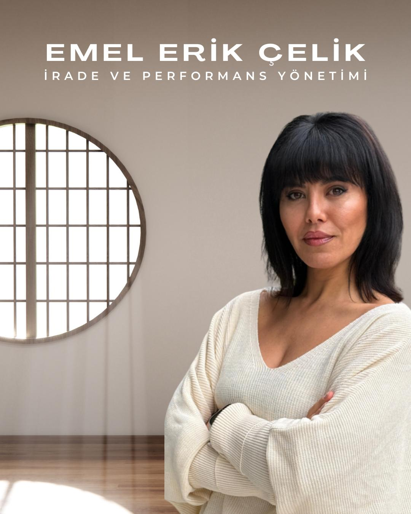

İnsan davranışı, performans gelişimi ve sürdürülebilir sistemler üzerine çalışan bir eğitimci, performans koçu ve danışmanım.
Lisans eğitimimi Mimar Sinan Güzel Sanatlar Üniversitesi Sanat Tarihi bölümünde tamamladıktan sonra, insanın düşünce, karar ve davranış mekanizmalarını daha derinlemesine anlamak amacıyla Sosyal Psikoloji alanında uzmanlaştım.
Profesyonel kariyerim boyunca uluslararası yapılarda satış, yönetim, eğitim ve performans geliştirme rollerinde aktif görev alarak, bireysel potansiyel ile kurumsal performans arasındaki ilişkiyi saha deneyimi ile yapılandırdım.
Bu süreçte uzmanlığımı bilimsel, teknik ve sistemsel temellerle güçlendirmek amacıyla çok katmanlı bir yetkinlik altyapısı oluşturdum.
"Hayaller ve İrade" ismini verdiğim performans yönetim programı, Transaksiyonel Analizin temellerinden faydalanarak geliştirilmiş olup, bireylerin kendi potansiyellerini keşfetmelerine, hedeflerine odaklanmalarına ve sürdürülebilir gelişim süreçleri tasarlamalarına yardımcı olmaktadır.

Profesyonel Deneyim ve Uzmanlık Alanları
Uzmanlık ve Yetkinlik Alanlarım
1. Eğitim, Koçluk ve İnsan Gelişimi Yetkinliği
• Eğiticinin Eğitimi
• Performans Koçluğu ve Aile Koçluğu Eğitimleri
• NLP, Hipnoz ve Kişilik Psikolojisi Uzmanlık Eğitimleri
• Oyun Terapisi, Çocuk Gelişimi ve Bilişsel Gelişim Eğitimleri
• Hafıza Teknikleri ve Öğrenme Metodolojileri Uzmanlığı
Bu yetkinlikler sayesinde bireylerin düşünce kalıplarını, davranış modellerini ve performans potansiyellerini sistemli şekilde analiz ederek gelişim süreçleri tasarlıyorum.
2. Kurumsal Sistem, Kalite ve Denetim Uzmanlığı
Uluslararası Standartlarda sahip olduğum başlıca sertifikalar:
• ISO 9001 Kalite Yönetim Sistemi Başdenetçi
• ISO 45001 İş Sağlığı ve Güvenliği Başdenetçi
• Kalite Mühendisliği ve Yönetimi Uzmanlığı
• Kurumsal Süreç Geliştirme ve Performans Sistemi Tasarımı
Bu altyapı, kurumlarda ölçülebilir, sürdürülebilir ve denetlenebilir performans sistemleri kurmamı sağlamaktadır.
3. Sürdürülebilirlik ve Karbon / Su Ayak İzi Uzmanlığı
• ISO 14064 Kurumsal Karbon Ayak İzi Hesaplama Uzmanlığı
• ISO 14046 Kurumsal Su Ayak İzi Hesaplama Uzmanlığı
Bu yetkinlik sayesinde özellikle Gayrimenkul ve Kurumsal Yapılarda sürdürülebilirlik temelli değer analizi, karbon etkisi değerlendirmesi ve gelecek odaklı stratejik danışmanlık sunuyorum.
Bu alan, günümüz ve geleceğin en kritik uzmanlık başlıklarından biridir.
4. Satış, Yönetim ve Stratejik Performans Uzmanlığı
• İleri Satış Teknikleri Uzmanlığı
• Yönetim Geliştirme Programları
• Stratejik Performans ve Liderlik Gelişimi Eğitimleri
Bu birikim, teorik bilgi ile saha gerçekliğini birleştiren uygulanabilir performans modelleri oluşturmamı sağlamaktadır.
Yaklaşımım
Çalışmalarımın temel odağı:
• İnsan davranışını anlamak
• Potansiyeli ortaya çıkarmak
• Performansı sistemleştirmek
• Kurum ve birey için sürdürülebilir gelişim modeli kurmak
Benim yaklaşımımda gelişim, motivasyonla değil, doğru yapı ve doğru sistemle kalıcı hale gelir. Çünkü gerçek dönüşüm, farkındalıkla başlar ve doğru yapı ile sürdürülebilir olur.
Yetkinlikler
- Koçluk ve Gelişim Odaklı Bireysel Süreç Yönetimi
- Kurumsal Eğitim Tasarımı ve Uygulama Becerisi
- Performans Koçluğu ve Takım Gelişimi
- İletişim, Motivasyon ve Liderlik Alanında İçerik Üretimi
- Danışmanlık Süreçlerinde Analiz, Planlama ve Eyleme Geçirme